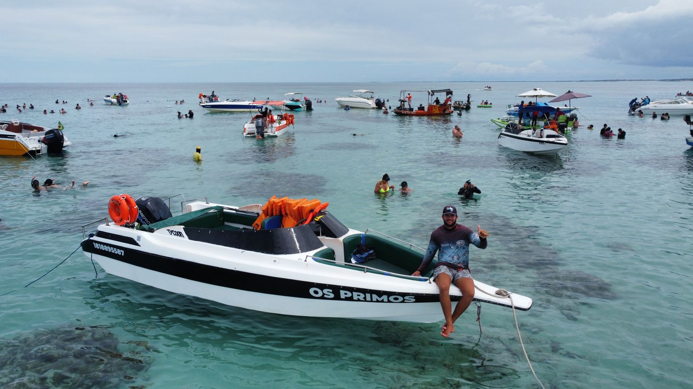

A História da Nossa Marca
Lentes do Mar surgiu de uma ideia simples: capturar o que eu via enquanto trabalhava como
piloto de lancha nos Parrachos de Rio do Fogo, no Rio Grande do Norte. A ideia
de fotografar veio de uma forma descontraída, mais por diversão e para ganhar um dinheiro extra.
Comecei registrando as paisagens e a vida marinha durante os passeios e percebi que poderia fazer algo maior
com isso.
A Lentes do mar é um reflexo desse momento de diversão que se transformou em algo mais sério. A ideia do
nome veio naturalmente, pois Lentes do Mar combina perfeitamente com o cenário das minhas fotos.
Não é algo elaborado, mas algo que faz sentido quando se olha para o mar e suas águas cristalinas.

O Fotógrafo Por Trás das Lentes
Sou Klayves Neri, o cara por trás das lentes. Trabalho com passeios nos Parrachos de Rio do Fogo e, há algum
tempo, comecei a tirar fotos durante os mergulhos e passeios. No começo, era só uma maneira de registrar o
momento e ganhar um extra. Mas com o pouco tempo, fui vendo o potencial dessas imagens, e as coisas estão evoluindo bastante.
Minha irmã foi quem criou a logo e a página do Instagram para dar um empurrão na ideia, caso um dia isso
crescesse. Não foi algo planejado para ser grande, mas, se der certo, vai ser um reflexo do que comecei por
diversão.

Missão e Valores
A missão da Lentes do Mar é bem simples: capturar imagens reais do oceano e de pessoas durante os
passeios a lancha nos Parrachos de Rio do Fogo, e mostrar isso de uma forma autêntica e direta. O objetivo é
registrar a beleza natural de cada um que passa por esse paraiso nordestino.
Acreditamos que as imagens falam por si mesmas e que a Lentes do mar representa exatamente o que queremos
transmitir: qualidade, autenticidade e uma conexão com o cenário natural. Não estamos aqui para inventar
algo grandioso, mas para mostrar o que é real e, quem sabe, crescer um pouco mais com o tempo.